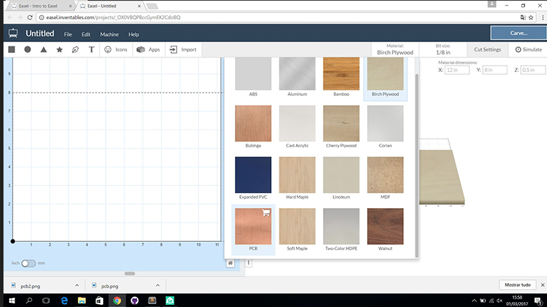
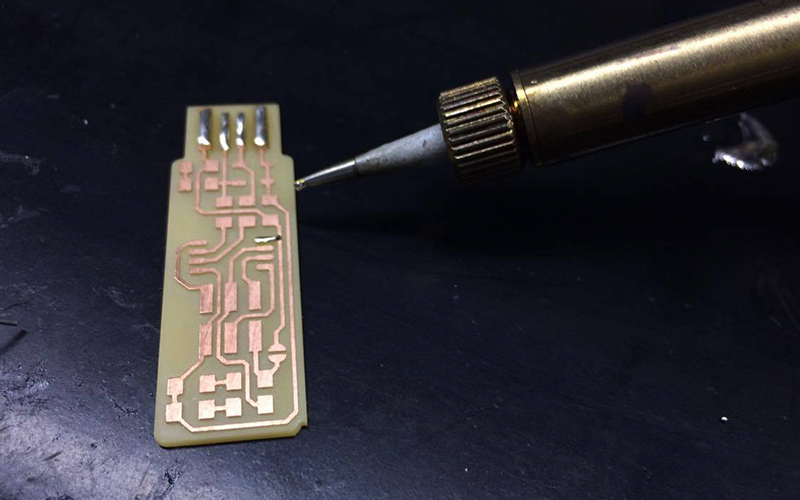

CNC Machining
I chose to make the pcb of Brian. To make this pcb i download the PNG files(Traces and outline Cutout). Before i import the files to the software i convert the PNG file to SVG.
I use for machining the pcb the CARVEY CNC. The software i use to control the CARVEY is EASEL. First step i chose the material i use in the CARVEY, in this case i use PCB FR2.
Before i put in the settings the tool i use to machinig the pcb for the traces i use tool with 0.4MM and to cut PCB i use 0.8MM.
To the Cut Settings i use the Recommended settings for this material. Feed Rate: 254 mm/min Plunge rate: 228.6 mm/min Depth per pass: 0.1mm
I import the SVG file to the EASEL and chose the Outline cut and the depth i cut is 0.1MM.
Before the settings is already ok i start the machining the PBC. First i make the the paths with depth 0.1MM and before cut the PCB with 1.7MM.
Soldering
For soldering the compenents in the PCB i use this tecnique, first i put the weld in one of the peds in the PCB before i put the component. In this step i soldering one of the peds in the pcb for the component is in the right place in the pcb footprint.
Before the component is in right place i soldering the all peds in the pcb.
For the final step i test all soldering with voltmeter.